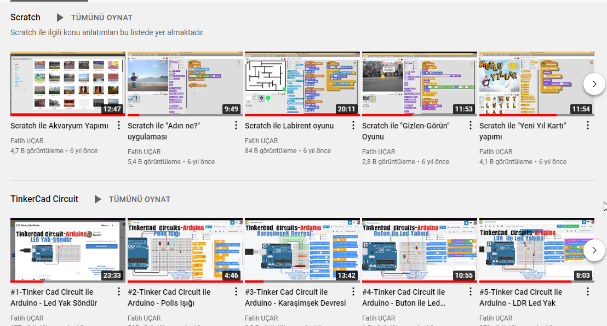
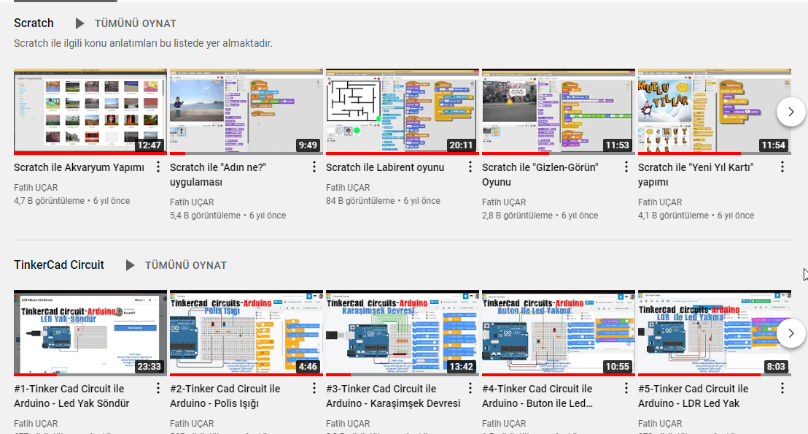

Anasayfa
Bilişim Teknolojileri ve Yazılım Dersi ile ilgili derslerin yer aldığı kişisel siteme Hoş Geldiniz!

Bilişim temel derstir...
Bilişim Teknolojileri ve Yazılım Dersi ile ilgili derslerin yer aldığı kişisel siteme Hoş Geldiniz!
